Each GIF is an animated heatmap showing, for one story, how compressed each subject’s recall is relative to the original narrative by segment.
segments.csv.len(clause_text) / sum(len(segment_text) for segment in segment_ids)
and adds that value to every mapped segment’s cell. Values are summed over all included clauses.The animation sweeps a threshold on clause abstractiveness: each frame includes only clauses with fan_out ≥ min_fan_out. As the threshold decreases across frames, more (less-abstractive) clauses are included, so the heatmap typically fills in.
Interpretation: lower ratios mean the recall is shorter than the corresponding narrative content
(more compressed / more condensed). Higher ratios mean less compression. The colormap is capped at 1
(vmax=1), so values above 1 will saturate to the max color.
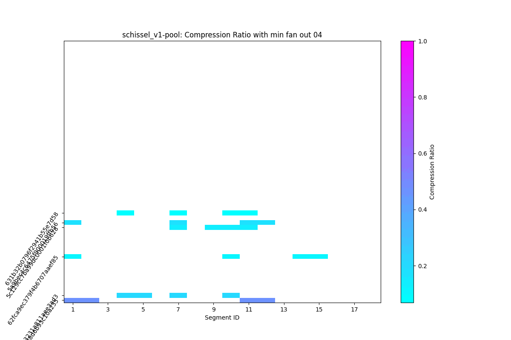
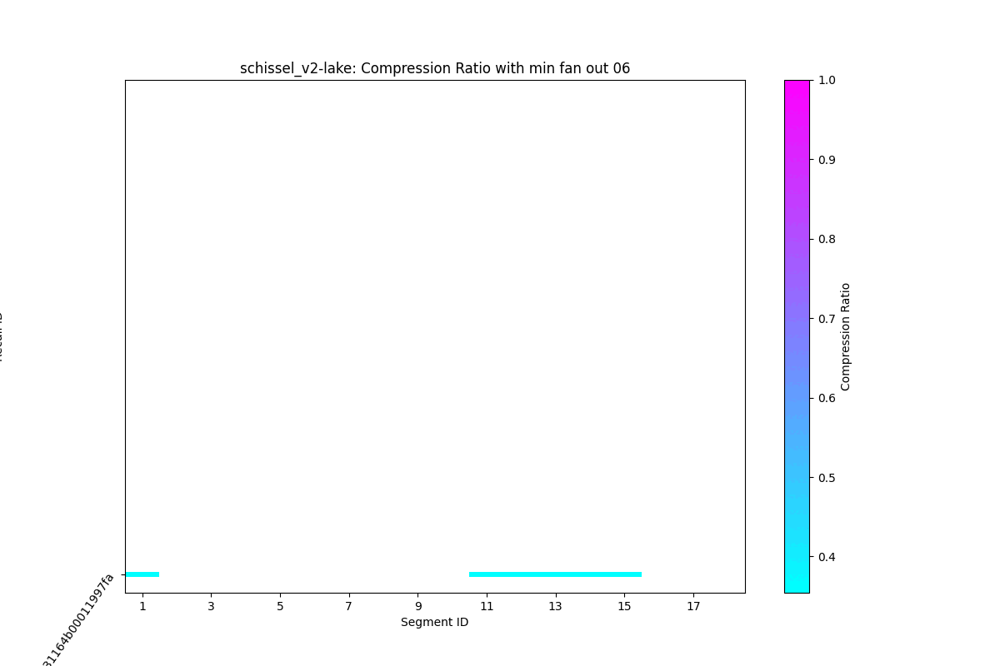
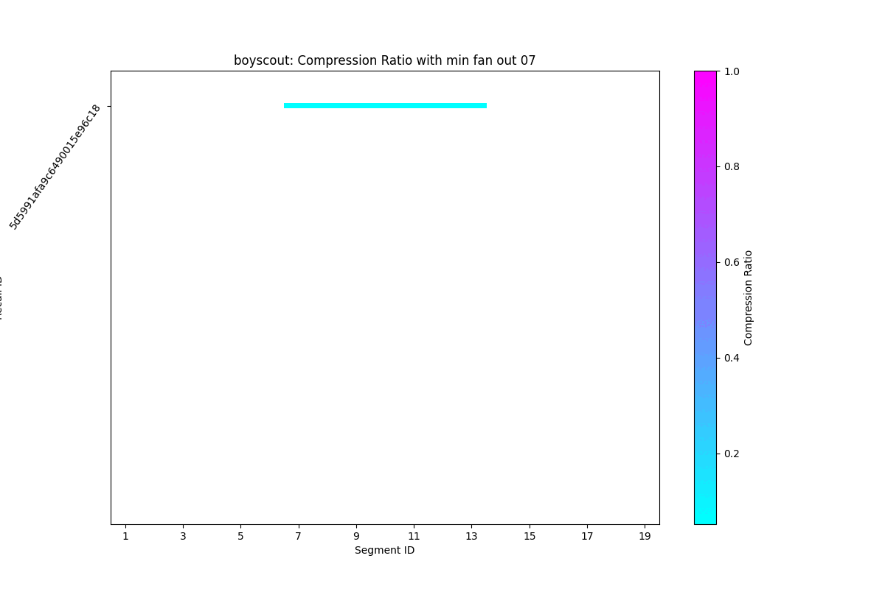
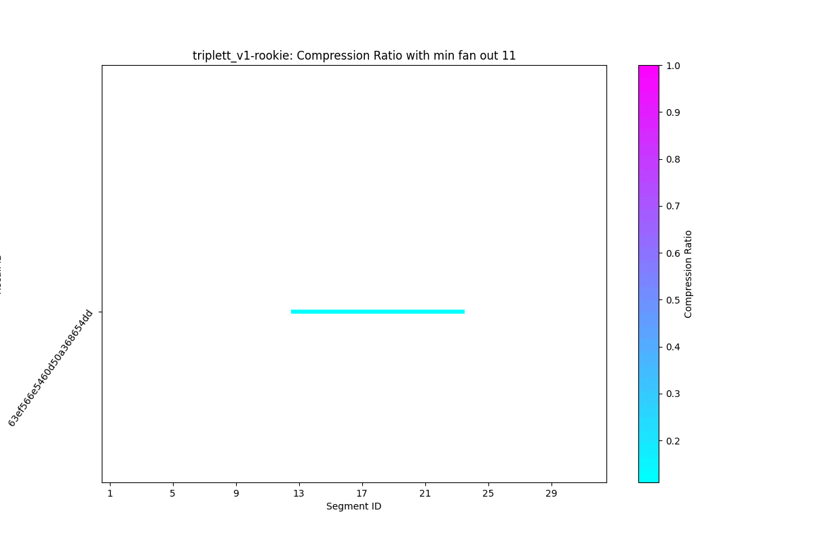
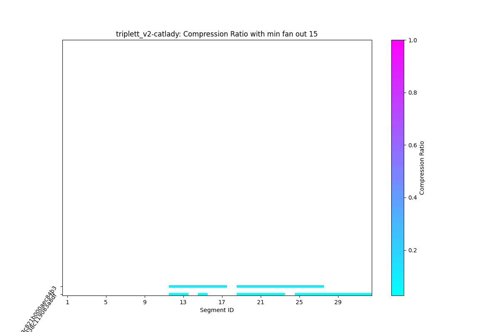
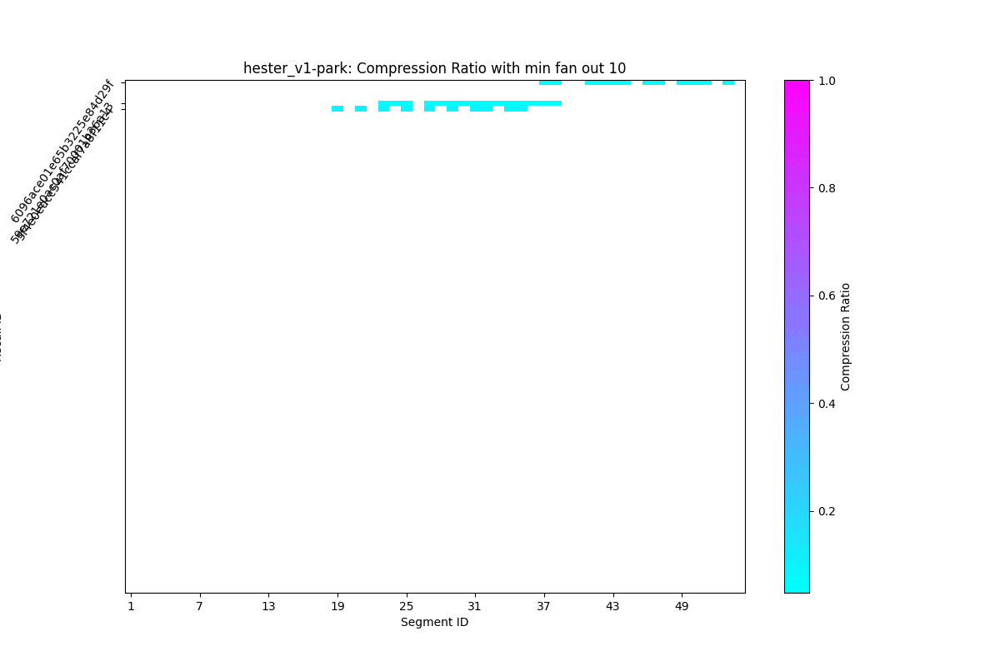
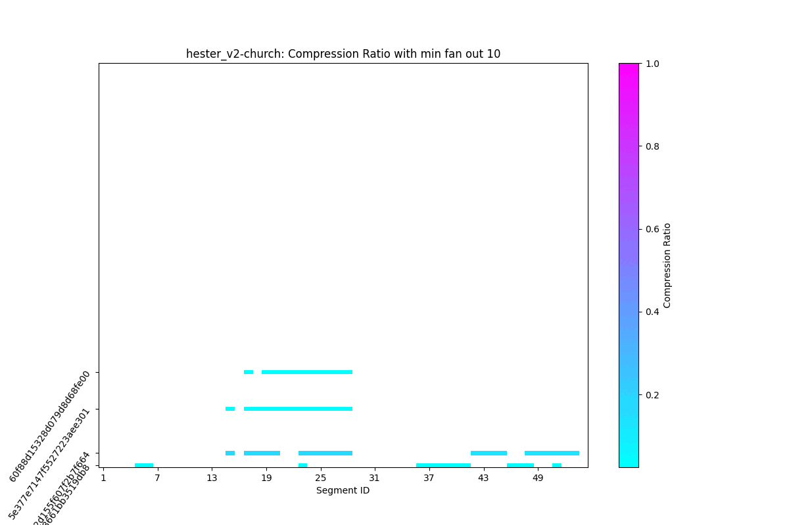
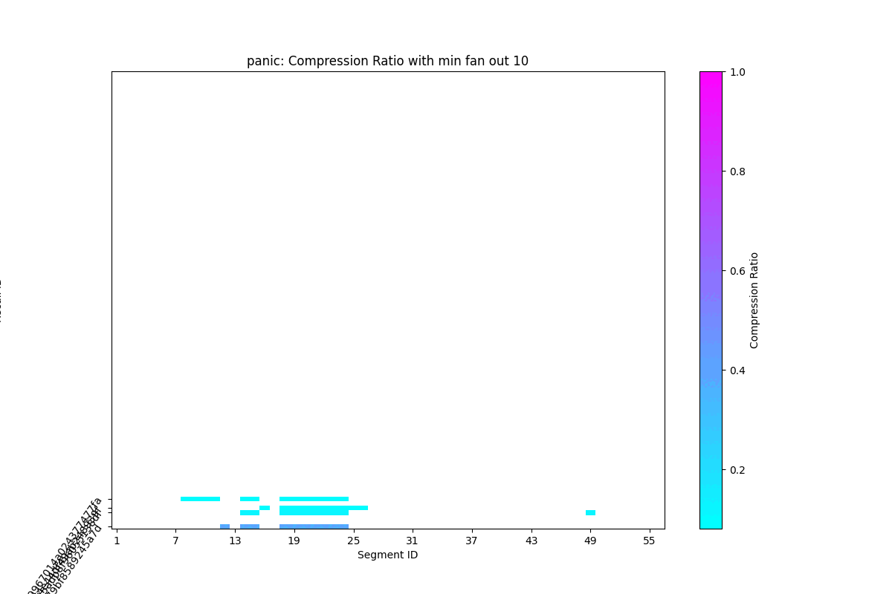
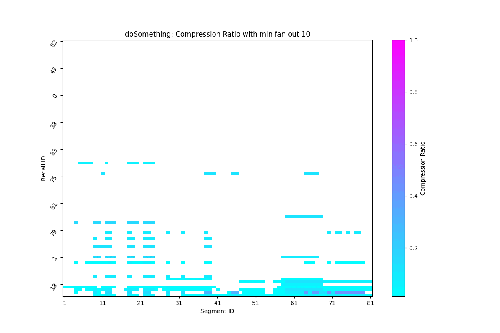
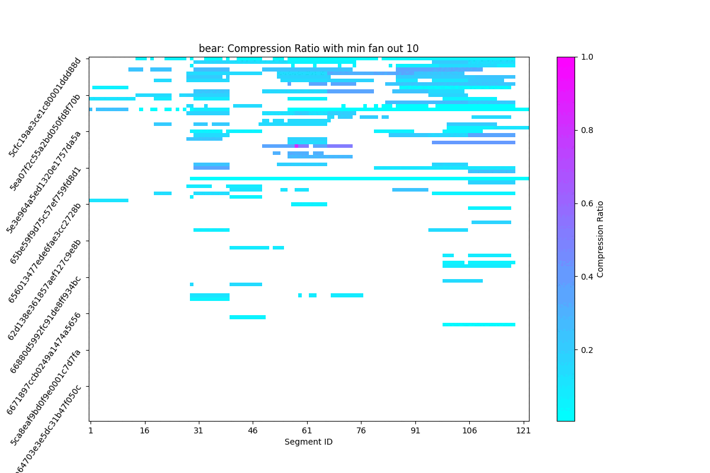
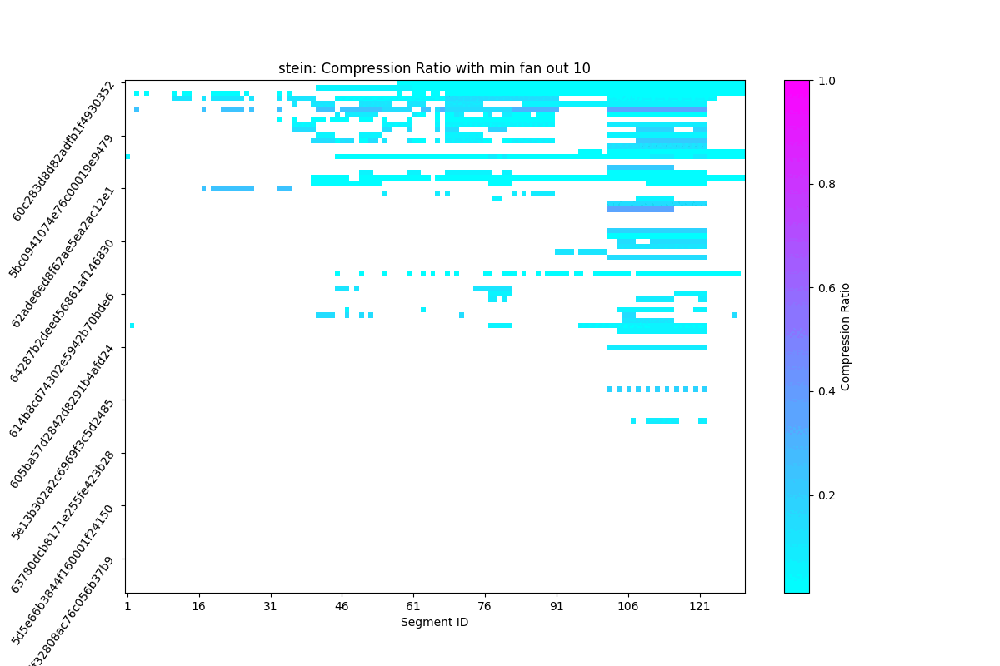
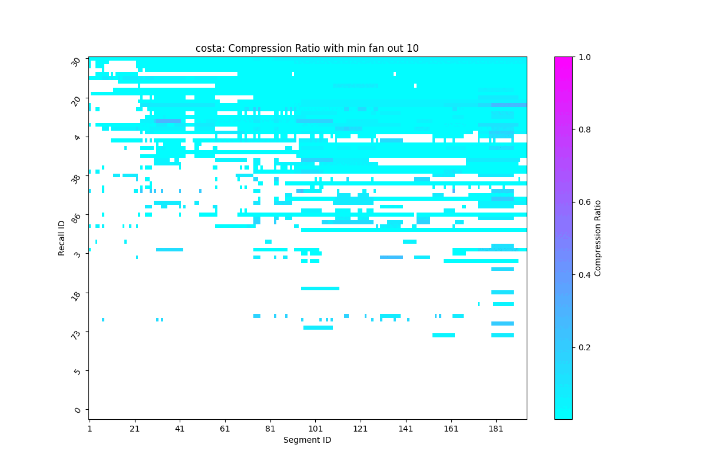